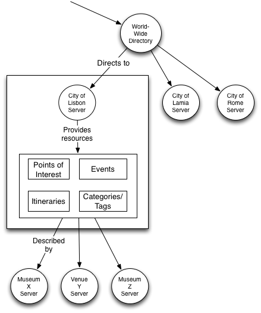

REST API
Main Entry Point
The CitySDK Tourism API is a RESTful API, since it follows a hypermedia-driven approach. So,
performing a GET to the main URL will get you going through the system.
API Resources
In this section, you will find a description of the resources that you can access through the API.
Message Codes
In case of a successful request, a 2xx HTTP code will be returned alongside with the JSON response containing the results.
In case of an error - whether it be an erroneous request or a server-side error - the server will return a message containing a description of what went wrong. Alongside this description, a 5xx HTTP code will be returned.
Server Resources
Upon making the to the main URL, you will be presented with the server resources in various versions, indicating which queries are available in the visited server. The server resources is merely an array of of hypermedia links, where each element has the following properties:
version- the version of the hypermedia links._links- the resources available in the server, each with a given name shown in Resources.
Each of them are composed of:
href- the URI for the query;templated- if set to true, the URI in href follows the URI Template RFC (e.g.: http://citysdk.com/v2/poi/search{?category,tag,complete,minimal,coords,show}).
To make a given query, simply use or build (if it is templated) the href of a given resource and perform a GET on the resulting URL.
Points Of Interest, Events and Routes
Each of the 3 resources follow the UML below. For further details go to W3C-POI WG. Since the 3 resources inherit from the POI class, its properties are as follows:
base- String - base URI of the POI;id- String - the ID of the POI;lang- String - the default language of the POI;license- POITermType - the license restrictions of the POI;term- String - to discreminate multiple licenses (e.g.: common, opensource);value- String.author- POITermType - the author of the POI;term- String - to discreminate if the author is a primary, secondary, contributer, editor or publisher author;value- String.created- Date - the date in which the POI was created (format: YYYY-MM-DD'T'hh:mm:ss.SSSSSSS'Z');updated- Date - same format as created;deleted- Date - same format as created;label- POITermType - a human-readable name of the POI. Multiple names are used for synonyms and multiple languages;lang- String - the language of the label;term- String - if it is the primary or secondary name;value- String.description- POIBaseType - a human-readable description that can be discriminated with the language attribute;lang- String;value- String;type- String - to discretize the type of description. Its values may be the following:- X-citysdk/price - containing, e.g., a price of entrance;
- X-citysdk/waiting-time - indicating the waiting time in seconds;
- X-citysdk/occupation - containing the occupation of the POI, between 0 and 100;
- X-citysdk/accessibility-textual - accessibility information in human-readable format;
- X-citysdk/accessibility-properties - containing machine-readable accessibility information.
category- POITermType - categorical classification of the POI;term- String - either a category or a tag;value- String.location- Location - provides information about the POI's location;point;Point- Geometry - a single point (latitude and longitude);srsName- String - coordinate reference system;posList- String - the coordinates set.term- String - term used to describe this point. Recommended terms are: entrance, center, navigation point.line;LineString- Geometry - a set of two points;srsName- String;posList- String.term- String - term used to describe this line.polygon;SimplePolygon- Geometry - a list of coordinates;srsName- String;posList- String.term- String - term used to describe this polygon.address- POIBaseType - the civic address of the POI;type- String - text/vCard;value- String - address in vCard format.relationship- Relationship - establishes relations between POIs;term- String - possible terms: equals, disjoint, intersects, crosses, overlaps, within, contains, touches;base- String;targetPOI- String - the ID of a Point of Interest; ortargetEvent- String the ID of an Event.time- POITermType - a fixed time or sequence of times using iCalendar;term- String - possible terms: start, end, open and instant;type- String - text/calendar;value- String - the time in iCalendar format.link- POITermType - a link to another POI or web resource;term- String - possible terms: alternate, canonical, copyright, describedby, edit, enclosure, icon, latest-version, license, related, search, parent, child, historic and future;type- String - the MIME type;href- String - the absolute path of the link;base- String;id- String.
-
Contains 0 or more of the following geometries:
There is however some minimizations in the format for Points of Interest and Routes. The differences of the Points of Interest format reside in the following:
- The
descriptionfield will only contain a description and no more data (such as prices or waiting time); - The
locationfield will only contain a geometry describing its coordinates;
The - identifications.
links field will only contain a thumbnail and no other links relating to multimedia or alternative
Routes is a special case of a POI, that is, it contains in its properties a list of Points of Interest with minimal description. So, alongside the presented properties (except for location and time),
it contains an extra one called pois.
So, and just like the Points of Interest, Routes also has a minimal description. Such description will not contain the pois property.
Lists of Points Of Interest, Events and Routes
Each of these elements have their own lists. The properties have the following names:
poi- will contain an array of Points of Interest in minimal description;event- will contain an array of Events;routes- will contain an array of Routes in minimal description.
There is also a special case (used by find-code resource) in which the 3 types of lists coexist. Its format is simply a JSON Object containing the 3 aforementioned names, if such search returns values for each of the 3 types.
Categories
The Categories (not to be mistaken with the category property) represents the available categories in a given server. Its properties have a recursive nature since a Category can contain itself. So, the Categories are represented as an array of categories with the following properties:
label- having the same properties of the POI;id- similar to POI;term- similar to POI;lang- similar to POI;categories- to allow recursiveness and representing sub-categories of a given category.
Tags
The Tags represent the available tags in a given server. It is an array of tag with the name tags. Each tag is an array of two properties:
lang- the language of the tag;value- the actual tag name.
Delegation model
As described before, the link field in a POI may contain the term described-by. This term and its corresponding href allows an application to fetch more granular data from other data sources. As such and as shown in the following diagram, one can travel from a world-wide directory (which provides a POI of a city) and from there, receive data about a POI, Event or Itinerary. These data models can further be described by more specific servers and their endpoints are provided by the described-by term.
